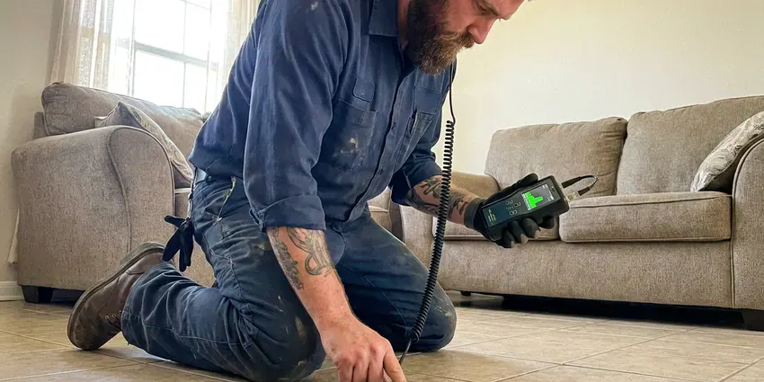

Plumbers Near Me in Germantown, MD
Water on the floor and no idea why? We find the source and fix it. BVL Plumbing serves Germantown, MD.
- Local Maryland Plumbing Crew
- Licensed Maryland Plumbers
- Same-Day Appointments
- Written Prices Up Front

Leaks, Clogs, No Hot Water in Germantown, MD?
Call (443) 719-1650 and you will get an honest time window, not an all-day wait.
Repairs and Installs in Germantown, MD
BVL Plumbing handles plumbing repairs and installs across Germantown, MD, from a dripping cartridge to a full repipe. The bulk of our work is everyday repairs. Running toilets, slow drains, a water heater that quit, a leak under the sink that has been getting worse for a week, and we bring the parts to fix them on the first trip.
Some of what we do:
- Slab leak locating and repair
- Gas line repair for ranges, dryers and water heaters
- Leak detection on copper, PEX and galvanized

Additional Plumbing Maintenance Services in Germantown, MD
Our maintenance and specialty plumbing services in Germantown, MD protect your home year-round and extend the life of every system.


Customers
Why Choose BVL Plumbing for Plumbers Near Me in Germantown, MD?
Our plumbers live and work around Germantown. They are your neighbors. That means they know the housing stock, the local inspectors and which neighborhoods have the old galvanized mains that tend to fail first, and they come back if something we did needs another look.
- Straight Answers, We tell you if a fix makes more sense than new.
- Stocked Trucks, Common parts ride on every truck, so most repairs finish in one visit.
- Fast Response, Emergency calls move to the front of the line to limit water damage.
Citywide Coverage
Single-family homes, townhomes, rentals and small businesses, we serve all of them across Germantown, MD. Property managers use us often. We can coordinate access with tenants, document the work and bill the owner.
Experienced Team
Our plumbers hold Maryland licenses and have seen just about every plumbing problem a house can have. They have seen it before. That experience shows in the diagnosis, because they find the real cause fast.
Safety-First Approach
We carry liability insurance and workers compensation. You are covered if something goes wrong. If a plumber gets hurt on your property or something gets damaged, our coverage handles it instead of your homeowners policy.
Trusted Certified Germantown Plumbing Services Professionals
At BVL Plumbing, we take pride in licensed, certified plumbing services throughout Germantown, MD. Those papers on the wall mean something. Every repair, install and maintenance visit follows strict safety and quality rules, and the plumbers doing the work carry recognized industry credentials.
Call Us Now PHCC Plumbing Contractor Recognition
PHCC Plumbing Contractor Recognition Better Business Bureau (BBB) Accreditation
Better Business Bureau (BBB) Accreditation Angi Certified Pro
Angi Certified Pro ISO 9001 Quality Management Certification
ISO 9001 Quality Management CertificationPlumbing Work We Do Every Week in Germantown, MD
Slab Leak Detection & Repair in Germantown, MD
Soils in Maryland range from heavy clay in the central counties to sandy, low-lying ground near the shore, and each affects buried lines differently. A slab leak is a supply pipe leaking under the concrete floor. Warm spots are a clue. We find it with acoustic gear and a thermal camera, then price a spot repair, a reroute or a repipe. Each has its tradeoffs.

Emergency Plumbing Repairs in Germantown, MD
Overflowing toilets and burst pipes cannot wait until Monday. Gas odors are urgent too. Our emergency plumbers respond fast, shut off the water or gas and make the repair or a safe temporary fix, carrying the common parts that let most emergencies finish in one trip. You get the rate up front.
Drain Cleaning and Sewer Service in Germantown, MD
Slow sinks, tubs and toilets are some of our most common calls. Usually it is an easy fix. We use cables and jetters sized to the pipe, test the flow and scope the main on whole-house backups. You find out what we pulled out.
Emergency Plumbing in Germantown
Burst pipes, sewer backups and dead water heaters tend to happen at night. We answer anyway. An emergency plumber in Germantown shuts off the water or gas, contains the problem and fixes it or makes it safe. You hear the rate before we come.
Drain Cleaning & Clog Removal in Germantown
Most clogs are grease in the kitchen and hair in the bathroom. Simple to clear. We clear them with cables and jetters sized to the pipe, checking the main when more than one fixture is slow around Germantown. We scope drains that keep clogging.
Water Heater Repair and Replacement in Germantown
A water test is a smart first step around Germantown before choosing a treatment system, because hardness and minerals vary from one supply to the next. Sediment settles in the bottom of a tank and shortens its life. Annual flushing slows it down. We flush tanks, swap worn parts and install new units from the major brands. Every install includes proper venting, an expansion tank where needed and code-required strapping.
Commercial Plumbing Service in Germantown, MD
Offices, salons and retail spaces need restrooms that work every day. Customers notice right away. We handle commercial water heaters, grease traps and backflow testing on a maintenance plan. Off-hours scheduling is available.

Emergency Plumbing Services in Germantown
A burst supply line can put several gallons a minute on the floor. Shut the main first. BVL Plumbing answers emergency calls around the clock in Germantown, and the plumber who shows up carries the fittings, valves and pipe to make a permanent repair rather than a temporary patch. Speed limits the damage.
Why a Nearby Plumber Matters in Germantown, MD
Our plumbers work Germantown every day and know the local housing stock. That speeds things up. Older neighborhoods tend to have galvanized pipe and worn gate valves, and newer ones have PEX, so we load the right parts.
Close by also means we come back. Follow-ups are easy. If something we fixed needs another look, we come back and make it right, because we work in Germantown every day.
BVL Plumbing at a Glance
- Fully licensed plumbing team covering Germantown, MD
- 24/7 emergency service with same-day scheduling
- Clear written estimates, no hidden fees
- 4.8-star rated by 542+ Maryland customers
Germantown Map
Germantown Information
- Population
- 91,249
- Area codes
- 301/240/443
- Service area
- Germantown and communities within 40 miles
- Nearby
- Gaithersburg, Rockville, Aspen Hill, Potomac
Water heaters work hardest during the cold months, when incoming water temperatures drop and household demand for hot water climbs. Pipes, valves and water heaters all wear faster under that kind of stress, so having a plumber nearby in Germantown, MD keeps small problems small.
Talk to a Plumber
Call BVL Plumbing for reliable plumbing work done by licensed pros in Germantown, MD.
Our Specialized Plumbing Services in Germantown, MD
At BVL Plumbing, we handle the full list of plumbing services across Germantown, MD. We go from leak detection all the way to full system installations, for homes and commercial buildings, and we do it quickly at a fair price. Here are the core services we offer:


From Your Call to a Fixed Problem in Germantown, MD
From booking to cleanup, here is what to expect.
Call Us
Call (443) 719-1650 and tell us what is going on. We will set an arrival window that works. We serve all of Germantown.
Diagnose
A licensed plumber finds the cause and walks you through it. You hear the options.
Written Price
Nothing starts until you approve a written quote. No surprises.
Frequently Asked Questions About Plumbers Near Me in Germantown
It depends a lot on the job. Simple fixes cost the least. A basic repair like a dripping faucet in Germantown might run $150 to $300, while bigger work such as a water heater replacement or a slab leak repair can run from $800 into the thousands. We price it after we diagnose it.
Yes, on parts and labor. You get it on paper. Our workmanship warranty covers the labor on repairs and installs in Germantown, MD, while parts carry their own manufacturer coverage. Details are on your invoice.
Rheem, Bradford White, AO Smith, Navien and Rinnai. Other brands on request. We help you choose the right size and fuel type, based on your household and what hookups you have. Tankless and high-efficiency options are available.
We install all the major brands. Moen and Delta lead the list. Kohler and American Standard fixtures are regulars too, with Rheem, AO Smith, Bradford White and Navien for heaters. We can recommend a model.
For bigger jobs, usually yes. Small repairs often do not. Water heater replacements, gas lines and repipes generally need one in Germantown. BVL Plumbing handles the permit and the inspection.
Yes, in writing. Labor is covered. Parts carry the manufacturer warranty on top of ours, with the terms on your estimate and invoice. Keep the invoice for your records.
Check the water meter with everything off. If it moves, something leaks. Other signs are a bill that keeps climbing, damp spots on walls or floors, puddles you cannot explain, a musty smell and the sound of running water with no fixtures on. The sooner it is found, the less damage it does.
Soils in Maryland range from heavy clay in the central counties to sandy, low-lying ground near the shore, and each affects buried lines differently. A water test is a smart first step around Germantown before choosing a treatment system, because hardness and minerals vary from one supply to the next. Older homes in Germantown also tend to have aging galvanized pipe, stuck shutoff valves and roots in the sewer line.
Hear From Customers Who Hired Our Plumbing Experts

Robert G.
The camera showed a full break in our clay sewer line near the street. BVL Plumbing replaced it with a trenchless pipe burst, so the only digging was two small pits in the yard. They let us watch the footage before and after.
Sewer Line Replacement · Germantown, MDMarcus H.
Grease from the fryer line kept clogging the kitchen drain at my diner. BVL Plumbing hydro jetted the line after closing, showed me the buildup on camera, and set us up on a quarterly cleaning so it does not catch us on a Friday again.
Drain Cleaning · Germantown, MD
Sofia M.
Two new toilets went in during one visit. The tech set them on new wax rings and swapped the old supply lines. He also noticed our bathroom faucet dripping and replaced the cartridge while he was there. No mess left behind.
Toilet Installation · Aspen Hill, MD
Daniel K.
A pipe burst in the garage ceiling at 11 at night. Someone answered on the second ring, and the plumber was in my driveway about fifty minutes later. He shut off the main, cut out the split section, and had water back on before 2 am.
Emergency Plumbing · North Bethesda, MD
Mark T.
The floor drain in our office break room backed up every few weeks. The plumber ran a cable, then put a camera down and found roots at a joint about thirty feet out. Seeing it on the screen made the decision easy.
Drain Cleaning · North Bethesda, MD
Lisa C.
Water was pouring out from under the washing machine on a holiday weekend. BVL Plumbing talked me through closing the valves over the phone and had a plumber at the house within ninety minutes. It was a burst fill hose.
Emergency Plumbing · Wheaton, MD